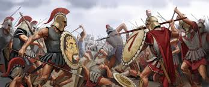

Principais Guerras

Guerras Médicas (499–449 a.C.)
Conflito entre gregos e persas. A Batalha de Maratona foi uma grande vitória grega. Já em Termópilas, 300 espartanos resistiram heroicamente contra um exército muito maior.

Batalha de Termópilas
Liderados pelo rei Leônidas, os espartanos enfrentaram os persas em uma batalha histórica. Apesar da derrota, tornou-se símbolo de coragem e sacrifício.

Guerra do Peloponeso (431–404 a.C.)
Conflito entre Atenas e Esparta. Durou quase 30 anos e terminou com a vitória de Esparta, enfraquecendo toda a Grécia.

Império de Alexandre, o Grande
Alexandre conquistou territórios do Egito até a Índia, espalhando a cultura grega e criando um dos maiores impérios da história.